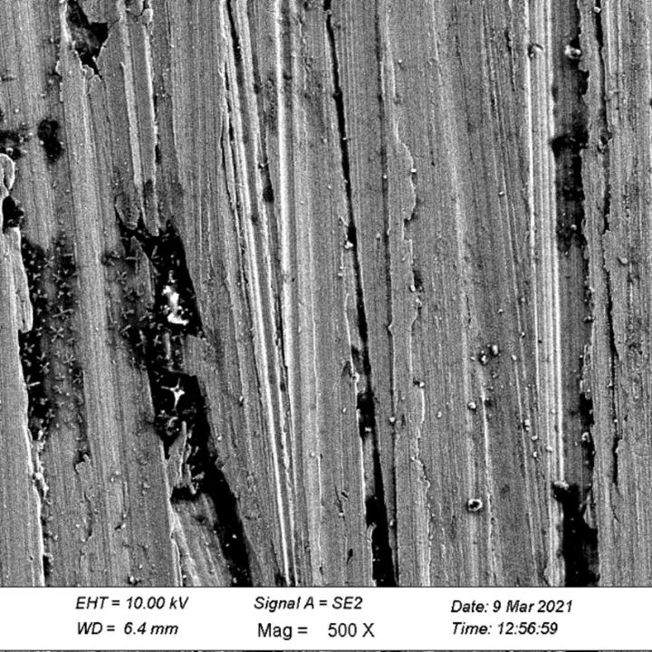

TIG Facing of AlCoCrFeNiCu Alloy on Stainless Steel
Objective: To enhance mechanical properties in high-strength applications using hard facing of high entropy alloy (HEA) on stainless steel, leading to increased hardness and wear resistance.
Methodology & Results
- Used TIG welding process with AlCoCrFeNiCu alloy on AISI 316 stainless steel.
- Current: 12 A (AC), Speed: 0.8 mm/sec, Electrode gap: 2.5 mm with Argon shielding.
- Characterization carried out using SEM, EDS, Vickers hardness test, and Pin-on-disc wear test.
- Hardness improved from 152 HV to 280 HV, representing a 1.84× increase.
- Wear tests were conducted using a pin-on-disc setup at 500 rpm under loads of 30 N, 50 N, and 70 N. The wear rate values obtained were 5.52 × 10-7 g/Nm, 3.51 × 10-7 g/Nm, and 3.81 × 10-7 g/Nm respectively.
- SEM analysis revealed grain refinement and improved wear-resistant microstructural features.
Vickers Hardness Calculation (Discussion)
The Vickers hardness value was calculated using the diagonal lengths of the square indentation measured with an optical microscope:
Average Diagonal Length: d = (d₁ + d₂) / 2 = (0.346 + 0.352) / 2 = 0.349 mm
Vickers Formula: HV = 1.854 × F / d² = 1.854 × 10 / (0.349)² ≈ 152 HV
This value represents the baseline hardness of the untreated stainless steel substrate and serves as a reference for evaluating the hardness enhancement achieved after TIG hard facing with the AlCoCrFeNiCu high entropy alloy.
Pin-on-Disc Wear Test Parameters
| Parameter | Standard / Value |
|---|---|
| Standard | ISO 20808 |
| Load | 30 N, 50 N, 70 N |
| Speed | 500 rpm |
| Track Radius | 30 mm |
| Sliding Distance | 1000 m |
| Test Time | Respective duration (minutes) |
| Pin | SS 316, Ø6 mm, flat-ended |
| Disc | SS 316 and HEA-coated SS 316 |
| Environment | Dry sliding, room temperature |
Microstructure & Analysis
SEM and EDS analyses confirmed uniform dispersion of alloying elements, refined microstructure, and well-defined wear tracks, contributing to improved wear resistance.

Applications
- Tool materials
- Aerospace and defense components (tanks, howitzers)
- Functional and protective coatings
- Transport and heavy engineering industries
Advantages
- Significant improvement in hardness and wear resistance
- Enhanced corrosion resistance
- Extended service life of components